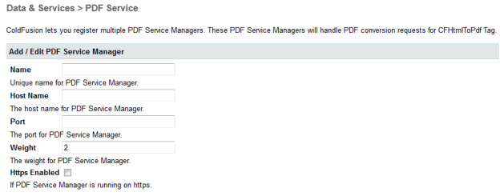
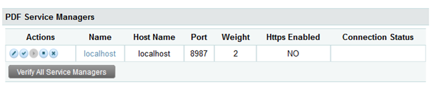

From the Administrator console, click Data & Services > PDF Service
You can add or edit a PDF service manager by providing the name, host name, port, and other configuration details.

To add or edit a remote service manager, you need to provide the details of
Jetty service running on local or remote machine over which the service manager
is deployed. Follow the instructions below to complete this process:
|
Local Service Manager: You can edit, enable, disable, and verify the service manager. Note that a local service manager cannot be added or deleted and it's host name cannot be changed. |
Using the remote service manager, you can add, edit, delete, enable, disable, and verify the service manager.
PDF Service Managers section lists all the available PDF service managers.

The description for each Action button (in the above image) is as follows:
|
Button |
Button Description |
Action |
|
|
Edit |
Enables users to edit the settings of the existing service manager. |
|
|
Verify |
Enables users to verify the current connection status of service manager. |
|
|
Delete |
Enables users to delete the PDF service. |
Note: Verify All Service Manager button is used to verify all the listed PDF Service Managers.
To configure the PDF service manager, use the configuration file (web.xml) located at <cf_install_root>/<CF Instance>/jetty/webapps/PDFgServlet/WEB-INF/. The available configuration settings are:
· minService = Minimum number of services running in process pool. Default value is 1.
· maxService = Maximum number of services that can run in the process pool. Default value is 2. As PDF Conversion is a CPU intense operation, it should be appropriately configured based on the number of processors in the system.
· idlePDFGServiceTimeout = Idle timeout for services in the process pool. After timeout, the services are removed. Default value is 2 minutes. Creation and initialization of service is a costly operation. Also the service consumes memory for conversion. Based on the conversion frequency and load, this parameter must be tuned.
· waitingQueueSize = The number of PDF conversion requests which can wait in the service manager queue. Default value is 10. Once the available services are engaged in the conversion process, upcoming conversion requests are queued up. Based on the load on the service manager at the given point of time, the queue size must be configured.
· waitingQueueTimeout = Timeout (in seconds) for queued PDF task in the service manager queue. Default value is 60 seconds.
· maxPDFConversionForService = Maximum PDF conversion allowed per service. Default value is 1000.Once service does the specified number of PDF conversions, the service will be restarted. Note: Based on how large or small PDF your application generates, this value needs to be tuned. For large PDFs, the memory usage of the service increases at faster rate than the smaller PDFs. Hence the maxPDFConversionForService value needs to be lower.
· startScanPort = Start scanning port used by the services. Default value is 1600.
· endScanPort = End scanning port used by services. Default value is 1800.
· enableLogging =By default logging for PDF service manager is disabled. To enable logging, set the flag to true.
PDF service manager logging is used to track service manager related issues and generates verbose log that contains complete details about the service and conversion request lifecycle. Use it to track the PDF conversion request.
Note: Logging should not be used for an extended period of time in a production environment. Extended use will produce large logs and impact performance.